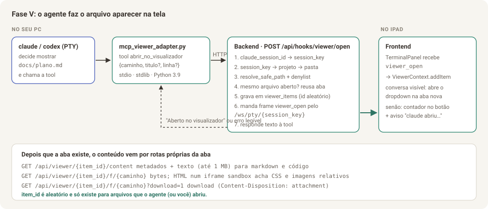

Parte 6 de 8
Parte 6 — Planejamento da Fase V: o agente abre o arquivo na tela
Por que esta fase vem primeiro: hoje o chat é um terminal e não dá para clicar em links. Então, antes do navegador de arquivos completo (Parte 1) e do chat estruturado (Parte 2), a entrega mais útil é o próprio agente fazer o arquivo aparecer na tela. Ele chama uma ferramenta, e o arquivo abre numa aba nova de um visualizador que fica no cabeçalho do chat, com botão de tela cheia.
Este documento é o plano de desenvolvimento: o que vai ser feito, em que ordem, com quais arquivos, contratos, testes e critérios de pronto. Ele foi escrito para ser executado por um agente numa janela de contexto limpa, lendo só esta pasta e o código.

Legenda: A botão Visualizador no cabeçalho do chat, com contador de abas · B dropdown com uma aba por arquivo aberto · C barra do arquivo com Baixar (⤓), Copiar (⧉), Abrir no navegador (↗) e Tela cheia · D o mesmo conteúdo em modal de tela cheia, com ✕ Fechar.
Atualização (Fase N, Parte 8): o "dropdown" do visualizador passa a abrir como painel à direita. Ele continua saindo do botão Visualizador do cabeçalho, com as mesmas abas, barra, ⤢ Tela cheia e ✕ Fechar. A forma de abrir depende da largura da tela:
- ≥ 1100 px (iPad deitado, desktop): painel encaixado à direita (
ViewerDock, larguraclamp(420px, 42vw, 780px)); a sidebar e a lista de chats viram trilhos de 68 px enquanto ele estiver aberto.- 641–1099 px: painel por cima (
ViewerDrawer).- ≤ 640 px: tela cheia.
Neste documento, onde estiver escrito "dropdown", leia esse painel. O conteúdo (
ViewerPanel, abas, renderers) não muda. O mockup 13 mostra a posição nova; o mockup acima continua valendo para o conteúdo do painel e para a tela cheia.

6.1 Requisitos
O que foi pedido (palavras do Bruno, organizadas)
| # | Requisito |
|---|---|
| R1 | O próprio agente consegue fazer um arquivo .md, .html ou de código aparecer na tela. |
| R2 | Toda vez que o agente manda abrir, abre uma aba nova no visualizador. |
| R3 | Botão Tela cheia: o dropdown vira um modal de tela cheia na própria página, com botão de fechar. |
| R4 | Continua valendo o pedido original: ver .md como no GitHub, .html renderizado e código destacado, e baixar o arquivo no tablet. |
Como cada ponto foi interpretado (confirmar antes de codar)
| Ponto | Interpretação adotada | Alternativa, se o Bruno preferir |
|---|---|---|
| "Aba nova" | Aba dentro do visualizador do TaskNexus, não aba do navegador. Um botão ↗ abre o arquivo numa aba do navegador quando for útil (ex.: HTML) | Abrir sempre em aba do navegador. Não recomendado: no iPad isso tira você do app e o PWA instalado abre o Safari |
| O mesmo arquivo pedido de novo | Reaproveita a aba existente, recarrega o conteúdo (o agente pode ter alterado) e a coloca em foco | Criar uma aba duplicada toda vez (é só trocar uma flag no backend: reuse=false) |
| Abrir sozinho | Se a conversa do agente estiver visível, o dropdown abre sozinho na aba nova. Se não estiver, o botão mostra o contador e aparece um aviso "claude abriu plano.md · Ver" |
Nunca abrir sozinho, só contador |
| Celular (≤ 640 px) | Não há espaço para dropdown: o visualizador abre direto em tela cheia, por um botão flutuante ao lado do "☰ Menu" | — |
| Abas por conversa | Cada conversa tem as suas abas; trocar de conversa troca as abas | Um conjunto global de abas |
| Limite | Até 15 abas por conversa; ao passar disso, a mais antiga fecha | — |
6.2 Experiência de uso (UX)
Fluxo principal
- Você pede ao agente, no terminal: "gera o relatório em HTML e me mostra".
- O agente cria o arquivo e chama a ferramenta
abrir_no_visualizadorcomdocs/relatorio.html. No terminal aparece a chamada da ferramenta e o retorno "Aberto no visualizador do usuário (aba 3)". - No iPad, o dropdown do Visualizador abre sozinho abaixo do botão,
com a aba
relatorio.htmlativa, mostrando o HTML renderizado. - Toque em ⤢ Tela cheia: o conteúdo passa a ocupar a página inteira (modal), com as mesmas abas no topo e ✕ Fechar à direita.
- ✕ Fechar (ou Esc) volta para o dropdown. Tocar fora do dropdown ou Esc no dropdown fecha o visualizador. As abas continuam lá para reabrir pelo botão.
- ⤓ Baixar salva o arquivo no iPad (Arquivos › Downloads).
Outros pontos de entrada
- Você pede sem o agente: clicar num caminho de arquivo que aparece no terminal também abre no visualizador (6.5.6). Se o toque em link do terminal não funcionar no iPad, basta pedir ao agente "abre X no visualizador".
- Links dentro de um markdown aberto: link para outro arquivo do projeto
(
[plano](../plano.md)) abre outra aba no visualizador; linkhttps://abre no navegador.
Estados
| Estado | O que aparece |
|---|---|
| Nenhuma aba | Botão "Visualizador" sem contador; ao abrir: "Nenhum arquivo aberto ainda. Peça ao agente: abre o README no visualizador." |
| Carregando | Esqueleto (barras cinza) no corpo da aba |
| Markdown | Renderizado como no GitHub (títulos, tabelas, checklists, código com botão Copiar) |
| HTML | iframe isolado; alternância Preview · Código |
| Código/texto | Destaque de sintaxe, números de linha, rola até linha se informada e a destaca por 2 s |
| Imagem / PDF | <img> com zoom por pinça / <iframe> do PDF (Safari tem leitor nativo) |
| Binário ou > 1 MB | Nome, tipo, tamanho e botão Baixar em destaque (sem preview) |
| Arquivo apagado depois de aberto | "Este arquivo não existe mais. O agente pode ter movido ou apagado." + botão Fechar aba |
| Erro de rede | "Não consegui carregar o arquivo. Tentar de novo" |
Teclado e toque
- Esc: fecha a tela cheia; se não estiver em tela cheia, fecha o dropdown.
- Abas: toque troca; × fecha; rolagem horizontal quando não couberem. "Fechar todas" no menu "⋯" da barra.
- Alvos de toque com no mínimo 44 px no iPad (as abas têm 36 px de altura visual, mas a área tocável é 44 px com padding).
6.3 Arquitetura (TL)

Decisões
| Decisão | Escolha | Por quê |
|---|---|---|
| Como o agente "manda abrir" | Nova ferramenta MCP abrir_no_visualizador, num servidor MCP novo escritorio-visualizador |
É o mesmo mecanismo das ferramentas de card e tarefa que já existem. O _escritorio_mcp_servers() registra para o claude e para o codex automaticamente |
| Como o backend avisa a tela | Frame de controle viewer_open no WebSocket do terminal que já está aberto (/ws/pty/{session_key}) |
O canal já existe e o frontend já distingue frames de controle (resume_failed, spawn_failed) de saída do terminal. Nenhuma conexão nova |
| E se a tela estiver fechada? | A aba é gravada no banco (viewer_items). Ao abrir a conversa, o frontend busca as abas |
O aviso ao vivo é só conveniência; nada se perde |
| Como servir o arquivo | Rotas por aba (/api/viewer/{item_id}/…), onde item_id é aleatório |
Só arquivos que o agente (ou você) abriu ficam acessíveis, o que é bem menos exposição que um navegador de arquivos livre. Isso permite entregar esta fase antes da autenticação (F0) |
| HTML com CSS/imagens relativos | URL com o caminho do arquivo no fim: /api/viewer/{item_id}/f/docs/relatorio.html |
O navegador resolve style.css para /api/viewer/{item_id}/f/docs/style.css, e o backend serve o vizinho dentro do mesmo projeto |
| Isolamento do HTML | iframe sandbox="allow-scripts allow-popups" sem allow-same-origin + cabeçalho Content-Security-Policy: sandbox … |
O HTML roda numa origem opaca e não consegue chamar a API do TaskNexus |
| Onde o painel abre | À direita: encaixado (≥ 1100 px, com as colunas recolhidas enquanto aberto), por cima (641–1099 px) ou tela cheia (celular) | Pedido do Bruno: liberar o lado direito para o visualizador (Parte 8) |
| Tela cheia | Portal para document.body, mesmo contrato do CenteredModal.jsx (fora do wrapper que recebe inert, sem transform em ancestral de position: fixed) |
Respeita a invariante já testada em fixedPositioningInvariant.test.js |
Ligação com a aba Artefatos (Fase A, Parte 7)
A fase seguinte cria a aba Artefatos por cliente e projeto
(Parte 7). Para ela reaproveitar esta fase sem
copiar código: (1) servir conteúdo e arquivos a partir de um módulo
file_serving.py que recebe (project_root, rel_path, download); (2) o
ViewerPanel e os renderers não podem depender de session_key, só do item
(que terá uma origem: viewer ou artifact); (3) na Fase A, o
abrir_no_visualizador passa a publicar automaticamente .md/.html/.pdf como artefato.
O que fica para depois (não entra nesta fase)
Árvore de pastas, busca ⌘P, diff do git, zip de pasta, preview-url assinada
e autenticação. Estão nas Partes 1 e 4 e nas fases F0/F1. O código desta
fase deve ser reaproveitado lá (file_access.py e os renderers).
6.4 Backend (Dev)
6.4.1 Arquivos
backend/app/file_access.py # NOVO: resolve_safe_path, is_denied, detect_kind, language_for
backend/app/viewer_store.py # NOVO: ViewerStore (tabela viewer_items no sessions.db)
backend/app/file_serving.py # NOVO: content/f/download a partir de (project_root, rel_path);
# reaproveitado pela aba Artefatos (Parte 7)
backend/app/viewer_api.py # NOVO: APIRouter com as rotas 6.4.3 (usa file_serving)
backend/app/mcp_viewer_adapter.py # NOVO: servidor MCP stdio com a tool abrir_no_visualizador
backend/app/main.py # ALTERAR: registrar router, iniciar ViewerStore no lifespan,
# incluir "escritorio-visualizador" em _escritorio_mcp_servers,
# função notify_viewer_open(session_key, item)
backend/tests/test_file_access.py
backend/tests/test_viewer_store.py
backend/tests/test_viewer_endpoints.py
backend/tests/test_mcp_viewer_adapter.py
backend/tests/test_websocket.py # ALTERAR: caso do frame viewer_open
Se a refatoração de routers (4.3) ainda não tiver acontecido, não a faça
nesta fase: só crie o viewer_api.py como APIRouter e registre com
app.include_router(...). O main.py ganha poucas linhas.
6.4.2 file_access.py
def resolve_safe_path(project_root: str, caminho: str) -> str:
"""Aceita caminho relativo à raiz do projeto ou absoluto DENTRO dela.
Devolve o caminho real (realpath). Levanta:
PermissionError -> fora do projeto, caractere proibido, ou denylist
FileNotFoundError -> não existe
IsADirectoryError -> é pasta
"""
- Rejeitar
\x00. Aceitar\só no Windows, normalizando (o middlewareRejectBackslashPathMiddlewareatua na URL, não no corpo JSON da tool). - Relativo:
os.path.join(root, caminho). Absoluto: usar como está. Depoisrealpathnos dois lados ecommonpath(reaproveitar a lógica de_is_within_directorydeattachments.py, que já trata drive diferente no Windows; extrair para cá e fazerattachments.pyimportar daqui). - Denylist (
is_denied(rel_path)):.enve.env.*(exceto.env.example),*.pem,*.key,*.p12,*.pfx,id_rsa*,id_ed25519*,*.kdbx, qualquer coisa dentro de.git/,.npmrc,.pypirc,credentials*.json,*.db,*.db-wal,*.db-shm. detect_kind(path, head_bytes)→markdown | html | code | image | pdf | video | binary(pela extensão;binaryse houver\x00nos primeiros 8 KB).language_for(path)→ id de linguagem para o destaque de sintaxe (.py→python,.js/.mjs→javascript,.jsx→jsx,.ts→typescript,.tsx→tsx,.json→json,.css→css,.html→html,.sh→bash,.ps1→powershell,.yml/.yaml→yaml,.toml→toml,.sql→sql,.md→markdown,Dockerfile→docker, senãotext).
6.4.3 Rotas
| Rota | Quem chama | Corpo / resposta |
|---|---|---|
POST /api/hooks/viewer/open |
só o adapter MCP (loopback) | corpo {"claude_session_id","caminho","titulo"?,"linha"?} → {"success":true,"item":{…},"reused":false,"delivered":true} ou {"success":false,"error":"<mensagem para o agente>"} |
POST /api/sessions/{session_key}/viewer |
frontend (clique em caminho no terminal, link num markdown) | {"caminho","linha"?,"relativo_a"?} → mesmo formato. relativo_a = caminho do arquivo onde o link estava, para resolver ../x.md |
GET /api/sessions/{session_key}/viewer |
frontend ao montar/trocar de conversa | {"items":[…]} na ordem de criação |
DELETE /api/sessions/{session_key}/viewer/{item_id} |
fechar aba | {"status":"closed"} |
DELETE /api/sessions/{session_key}/viewer |
fechar todas | {"status":"closed","count":n} |
GET /api/viewer/{item_id}/content |
corpo da aba (markdown, código, texto) | {"item_id","path","size","mtime","kind","language","is_text","text"?,"truncated"} (texto até 1 MB) |
GET /api/viewer/{item_id}/f/{file_path:path} |
HTML no iframe, imagens, PDF, assets relativos | FileResponse; file_path é relativo à raiz do projeto do item e passa por resolve_safe_path + denylist |
GET /api/viewer/{item_id}/f/{file_path:path}?download=1 |
botão Baixar | igual + Content-Disposition: attachment; filename*=UTF-8''<nome> |
Formato de item:
{
"item_id": "vw_5Jc2k0q8Qm1Y0oHq3a1bXw",
"session_key": "podesubir/tasknexus::claude",
"project_id": "podesubir/tasknexus",
"path": "docs/relatorio.html",
"title": "relatorio.html",
"line": null,
"kind": "html",
"language": "html",
"opened_by": "agent",
"created_at": 1727650000.12,
"updated_at": 1727650000.12
}
Regras:
session_key→project_id=session_key.partition("::")[0](mesma regra usada emcontinue_session) →_resolve_project_or_404→project.path.- Hook:
claude_session_id→store.get_session_key_by_claude_id(igual aos hooks de card). Sem sessão:{"success":false,"error":"Sessão do TaskNexus não encontrada"}. - Reaproveitar aba: se já existir item aberto na mesma sessão com o mesmo
path, atualizaline,titleeupdated_at, e devolvereused:true. - Limite de 15 abas por sessão: ao criar a 16ª, apaga a de
updated_atmais antigo. - Cabeçalhos da rota
f/paratext/html,image/svg+xml,application/xhtml+xml,text/xml:Content-Security-Policy: sandbox allow-scripts allow-popups; default-src * data: blob: 'unsafe-inline' 'unsafe-eval',X-Content-Type-Options: nosniff. Para todos:Cache-Control: no-store(o agente reescreve arquivos). - Rotas
/api/hooks/viewer/*aceitam só cliente loopback (127.0.0.1/::1). O_hook_callback_base_url()já aponta os adaptadores parahttp://127.0.0.1:<porta>; a exceção é quandoHOOK_CALLBACK_BASE_URLestá definida (backend atrás de proxy/container): nesse caso não aplicar a checagem por IP, senão o hook para de funcionar. Não mexer nos hooks existentes nesta fase. - Todo acesso a disco com
asyncio.to_thread.
6.4.4 Aviso ao vivo (frame viewer_open)
Nova função no main.py, chamada pelas duas rotas POST depois de gravar:
async def notify_viewer_open(session_key: str, item: dict, reused: bool) -> bool:
ws = _active_connections.get(session_key)
if ws is None:
return False
try:
await ws.send_text(json.dumps({"type": "viewer_open", "item": item, "reused": reused}))
return True
except Exception: # socket fechando: a aba já está no banco, o front busca depois
return False
send_text já é o canal dos frames de controle neste WebSocket (a saída do
PTY vai sempre como bytes), então não há mistura com o terminal.
6.4.5 ViewerStore
Mesmo padrão dos stores atuais: conexão aiosqlite própria no sessions.db,
PRAGMA journal_mode=WAL, busy_timeout=5000, initialize() no lifespan.
CREATE TABLE IF NOT EXISTS viewer_items (
item_id TEXT PRIMARY KEY,
session_key TEXT NOT NULL,
project_id TEXT NOT NULL,
path TEXT NOT NULL,
title TEXT NOT NULL,
line INTEGER,
kind TEXT NOT NULL,
language TEXT,
opened_by TEXT NOT NULL, -- 'agent' | 'user'
created_at REAL NOT NULL,
updated_at REAL NOT NULL
);
CREATE INDEX IF NOT EXISTS ix_viewer_items_session ON viewer_items(session_key, updated_at);
Ao encerrar uma sessão (POST /api/sessions/{sk}/terminate), apagar as
abas dela.
6.4.6 Adapter MCP mcp_viewer_adapter.py
Copie o esqueleto de mcp_card_adapter.py (JSON-RPC 2.0 por linha no stdio,
stdlib pura, Python 3.9, TLS de loopback sem verificação, PYTHONUTF8=1).
Uma única tool:
{
"name": "abrir_no_visualizador",
"description": "Abre um arquivo do projeto no visualizador do TaskNexus, na tela do usuário (inclusive no iPad), numa aba nova. Use SEMPRE que criar ou alterar um arquivo que o usuário deva ler ou conferir (relatórios .html, documentos .md, planos, diagramas, trechos de código importantes) e sempre que o usuário pedir para ver, abrir ou mostrar um arquivo. O usuário não consegue clicar em links no terminal, então esta é a forma de mostrar arquivos a ele. Markdown aparece renderizado, HTML aparece como página, código aparece com destaque de sintaxe, e o usuário pode baixar o arquivo.",
"inputSchema": {
"type": "object",
"properties": {
"caminho": {"type": "string", "description": "Caminho do arquivo, relativo à raiz do projeto (ex.: docs/plano.md) ou absoluto dentro do projeto."},
"titulo": {"type": "string", "description": "Opcional. Nome curto da aba. Padrão: nome do arquivo."},
"linha": {"type": "integer", "description": "Opcional. Linha para rolar e destacar (arquivos de código)."}
},
"required": ["caminho"]
}
}
- Env vars:
ESCRITORIO_CLAUDE_SESSION_IDeESCRITORIO_HOOK_VIEWER_OPEN_URL({base_url}/api/hooks/viewer/open). - Respostas da tool (texto, para o agente ler):
- sucesso, entregue:
Aberto no visualizador do usuário: docs/relatorio.html (aba nova). - sucesso, aba reaproveitada:
…: docs/relatorio.html (aba já existia, foi atualizada). - sucesso, tela fechada:
Registrado no visualizador: docs/relatorio.html. O usuário verá ao abrir o TaskNexus. - erro do backend: o texto de
error(ex.:Arquivo não encontrado: docs/x.md,Caminho fora do projeto,Arquivo protegido (segredos não são exibidos)). - backend fora do ar:
Não foi possível falar com o TaskNexus agora.(sem travar, sem retry). - Registro: nova entrada
"escritorio-visualizador"em_escritorio_mcp_servers(). Com isso oclauderecebe pelo--mcp-confige ocodexpelos-c mcp_servers.*, sem outra mudança. Conferir que os testes de contrato do spawn (test_pty_manager*, testes do codex) continuam passando e atualizar o que listar os servidores esperados.
6.5 Frontend (Dev)
6.5.1 Arquivos
frontend/src/features/viewer/
ViewerContext.jsx # estado das abas por sessão + ações; Provider junto do TerminalProvider
viewerApi.js # fetch das rotas 6.4.3
ViewerButton.jsx # botão "Visualizador" com contador (cabeçalho do chat, iPad/PC)
ViewerMobileButton.jsx # botão flutuante ao lado do "☰ Menu" (celular)
ViewerDock.jsx # painel encaixado à direita (≥ 1100 px) — ver Parte 8
ViewerDrawer.jsx # mesmo painel por cima do conteúdo (641–1099 px), padrão do TasksDrawer
ViewerFullscreen.jsx # modal de tela cheia (portal, contrato do CenteredModal)
ViewerPanel.jsx # abas + barra de ações + corpo (usado pelos dois contêineres)
ViewerTabs.jsx
ViewerToolbar.jsx # Baixar, Copiar, Abrir no navegador, Tela cheia/Fechar, ⋯ (Fechar todas)
useViewerContent.js # busca /content com cache por item_id+updated_at
renderers/
MarkdownView.jsx # utils/markdown.js ampliado + destaque + botão Copiar nos blocos
HtmlView.jsx # iframe sandbox + Preview/Código
CodeView.jsx # destaque de sintaxe, números de linha, rolar até a linha
ImageView.jsx
PdfView.jsx
BinaryView.jsx
frontend/src/utils/markdown.js # ALTERAR: GFM, links, imagens relativas (6.5.4)
frontend/src/components/TerminalPanel.jsx # ALTERAR: frame viewer_open (+ links 6.5.6)
frontend/src/layouts/v2/AppV2.jsx # ALTERAR: ViewerButton no cabeçalho; botão mobile
frontend/src/App.jsx (ou main.jsx) # ALTERAR: ViewerProvider
package.json # + shiki, + @xterm/addon-web-links
6.5.2 ViewerContext
// estado
{
bySession: { [sessionKey]: { items: Item[], activeId: string|null, loaded: boolean } },
open: false, // dropdown aberto
fullscreen: false, // modal de tela cheia
unseen: { [sessionKey]: number } // contador para abas abertas com a conversa fora de vista
}
// ações
loadItems(sessionKey) // GET, ao montar/trocar de conversa (se !loaded)
receiveOpen(sessionKey, item, reused) // chamado pelo frame viewer_open
openByPath(sessionKey, caminho, {linha, relativoA}) // POST (links clicados pelo usuário)
closeItem(sessionKey, itemId) / closeAll(sessionKey)
setActive(sessionKey, itemId)
setOpen(bool) / setFullscreen(bool)
receiveOpen: adiciona ou atualiza o item e o torna ativo. Se
sessionKey === activeSessionKey e a tela de chat estiver visível: open=true
(no celular, fullscreen=true). Senão: unseen[sessionKey]++ e aviso curto
(toast) "claude abriu relatorio.html · Ver".
O TerminalPanel é montado também em testes isolados, sem Provider: use
useContext com fallback nulo e só chame receiveOpen se o contexto existir.
6.5.3 Painel à direita ("dropdown") e tela cheia
- Painel à direita, escolhido pela largura (Parte 8, seção 8.2.2):
ViewerDock(≥ 1100 px,WIDE_VIEWPORT_QUERY): irmão flex do conteúdo doChatV2, larguraclamp(420px, 42vw, 780px), borda esquerda--v2-border. Ao abrir/fechar, liga o recolhimento forçado das colunas (Parte 8, 8.3.3) e disparaescritorio:sidebar-toggledpara o xterm se reajustar.ViewerDrawer(641–1099 px): overlay à direita no padrão doTasksDrawer.jsx, larguramin(560px, 92vw), faixa--v2-scrimleve; fecha com Esc, ✕ ou toque fora.- Fecha também quando a sessão ativa muda? Não: as abas são por sessão, então o painel troca para as abas da nova sessão (ou mostra o estado vazio).
- Se a Fase N ainda não tiver sido feita, o
ViewerDockfunciona do mesmo jeito, só que sem o recolhimento automático (o usuário recolhe à mão). - Tela cheia:
ViewerFullscreenrenderiza oViewerPanelnum portal emdocument.body,position: fixed; inset: 0, respeitando--v2-safe-*. Barra superior: abas à esquerda, ✕ Fechar à direita (44 px). Esc ou Fechar →fullscreen=false(volta ao painel à direita no iPad/PC; no celular fecha tudo). - Um só painel por vez: quando
fullscreené verdadeiro, o painel à direita não renderiza. A aba ativa é a mesma nos dois (estado no contexto). Oiframedo HTML recarrega ao trocar de contêiner, o que é aceitável. - Botão no cabeçalho: ao lado de
AttachmentsMenuna topbar doAppV2(mesma guarda!isMobile && v2Screen === 'chat'). Rótulo "Visualizador" e selo com o número de abas; selo destacado quandounseen > 0. - Celular:
ViewerMobileButtonflutuante perto do "☰ Menu" quandomobileView === 'content', abrindo direto em tela cheia.
6.5.4 Renderização
- Markdown: ampliar
renderMarkdowncommarkedem modo GFM; manterDOMPurify. Depois de montar, os<pre><code class="language-x">recebem destaque (6.5.5) e um cabeçalho com linguagem e Copiar (utils/clipboard.js). Links: http(s)://→ nova aba do navegador (target="_blank" rel="noopener noreferrer");- relativos que apontam para arquivo (
../plano.md,src/app.py#L10) → interceptar o clique e chamaropenByPath(sessionKey, href, {relativoA: item.path}), abrindo outra aba do visualizador; - âncoras
#secao→ rolar dentro do painel. Imagens relativas →srcreescrito para/api/viewer/{item_id}/f/<caminho resolvido>. - HTML:
<iframe src="/api/viewer/{item_id}/f/{path}" sandbox="allow-scripts allow-popups allow-popups-to-escape-sandbox" referrerpolicy="no-referrer">ocupando o corpo inteiro; alternância Preview · Código (Código usa oCodeView). - Código: números de linha, quebra de linha opcional, rolar até
linee destacar por 2 s. Seleção de texto nativa. - Arquivos grandes/binários:
BinaryViewcom Baixar.
6.5.5 Destaque de sintaxe
Usar Shiki com carregamento sob demanda (import dinâmico do núcleo e de
cada linguagem só quando aparecer), temas github-light/github-dark
conforme data-theme. Se o custo de bundle ficar alto para o iPad (medir com
npm run build), a alternativa aceita é highlight.js com linguagens
registradas sob demanda; registrar a decisão no PR.
6.5.6 Links clicáveis no terminal (resolve o problema de origem)
@xterm/addon-web-links: URLshttps://…viram links e abrem em nova aba do navegador.term.registerLinkProviderpara caminhos de arquivo (docs/plano.md,src/app.py:42,./README.md, absolutos dentro do projeto): ao ativar, chamaopenByPath(sessionKey, caminho, {linha}).- Verificação obrigatória no iPad: o xterm ativa links por clique; no toque do iPad isso deve funcionar, mas precisa ser testado. Se não funcionar, registrar no PR. O caminho garantido continua sendo o agente chamar a tool.
6.6 Ordem de execução (um commit por passo, testes verdes em cada um)
| Passo | Entrega | Verificação |
|---|---|---|
| 1 | file_access.py + testes; attachments.py passa a importar a contenção daqui |
pytest tests/test_file_access.py tests/test_attachments*.py |
| 2 | ViewerStore + rotas 6.4.3 (sem MCP, sem WS) |
pytest tests/test_viewer_store.py tests/test_viewer_endpoints.py |
| 3 | mcp_viewer_adapter.py + registro em _escritorio_mcp_servers |
pytest tests/test_mcp_viewer_adapter.py + suíte do spawn/codex |
| 4 | notify_viewer_open + frame no WS |
caso novo em test_websocket.py |
| 5 | ViewerContext + tratamento do frame no TerminalPanel |
vitest do contexto e do isControlFrame |
| 6 | Dropdown, abas, barra, renderers Markdown/Código/Binário | vitest |
| 7 | HTML (iframe), imagem, PDF, download | vitest + manual |
| 8 | Tela cheia + botão mobile | vitest + manual |
| 9 | Links no terminal (6.5.6) | manual no iPad |
| 10 | Atualizar README do projeto (seção de uso) e esta doc se algo mudou | revisão |
6.7 Testes
Backend
resolve_safe_path: relativo ok; absoluto dentro ok;../fora, absoluto fora, symlink para fora,\x00, pasta, inexistente, cada item da denylist. No Windows: drive diferente → recusa.- Rotas: criar item pelo hook com
claude_session_idválido e inválido; reaproveitar aba do mesmo caminho (reused:true); limite de 15; listar em ordem; fechar uma e todas;contentde markdown, de binário (is_text:false) e de arquivo > 1 MB (truncated:true);f/com HTML tem CSPsandbox;f/servindostyle.cssvizinho;f/recusando.enve../../;download=1com nome acentuado; hook vindo de IP não-loopback → 403. - Adapter MCP:
initialize,tools/listcom a tool,tools/callcom sucesso, com erro do backend e com backend fora do ar (mesmo estilo detest_mcp_card_adapter.py). - WebSocket: com cliente conectado na sessão, o POST gera um frame de texto
viewer_open; sem cliente,delivered:falsee nada quebra.
Frontend
isControlFramereconheceviewer_open.ViewerContext:receiveOpencom conversa visível abre o dropdown; com conversa oculta incrementaunseen; aba reaproveitada não duplica; fechar a última aba fecha o dropdown.MarkdownView: link externo comrel="noopener noreferrer"; link relativo chamaopenByPathcomrelativoA; imagem relativa reescrita para/api/viewer/…/f/….HtmlView: iframe semallow-same-origin.ViewerFullscreen: Esc chamasetFullscreen(false); renderiza em portal.- Manter
fixedPositioningInvariant.test.jspassando.
Aceite manual (iPad, Safari e PWA instalado)
- Pedir ao claude: "crie
docs/teste-visualizador.mdcom uma tabela, uma checklist e um bloco de Python, e abra no visualizador". O dropdown abre sozinho com a aba renderizada. - Pedir outro arquivo: abre aba nova; pedir o primeiro de novo: foca a aba existente com o conteúdo atualizado.
- Pedir um
.htmlcom CSS e imagem em arquivos separados: aparece com estilo e imagem. - ⤢ Tela cheia → modal ocupando a página; ✕ Fechar volta ao dropdown; Esc também.
- ⤓ Baixar num
.md: arquivo em Arquivos › Downloads. - Selecionar três linhas de um bloco de código com o dedo e colar no Notas.
- Estar em outra conversa quando o agente abre um arquivo: contador no botão e aviso; ao trocar para a conversa, as abas estão lá.
- Recarregar a página: as abas continuam.
- No celular: botão flutuante abre direto em tela cheia.
- Pedir ao agente para abrir
.env: ele recebe "Arquivo protegido" e nada aparece. - Tocar num caminho de arquivo no terminal (registrar se funcionou no iPad).
- Mesmo teste 1 com o
codex.
6.8 Riscos e como mitigar
| Risco | Mitigação |
|---|---|
| O agente não usa a tool por conta própria | Descrição da tool diz explicitamente quando usar. Se ainda assim não usar, adicionar uma linha ao system_prompt do agente no cadastro de agentes (Configuração) ou ao CLAUDE.md do projeto: "Sempre que criar ou alterar um arquivo que eu deva ver, abra-o com abrir_no_visualizador." |
| Sem autenticação, alguém na rede lista abas e lê arquivos | Superfície limitada a arquivos abertos + vizinhos do mesmo projeto, com denylist. A autenticação (4.1, fase F0) fecha isso de vez e deve vir logo em seguida |
| HTML malicioso gerado por engano | iframe sem allow-same-origin + CSP sandbox no cabeçalho |
| Bundle pesado (Shiki, marked) no iPad | Imports dinâmicos; medir com npm run build e registrar tamanhos no PR |
| Frame chega enquanto o WS está sendo substituído (evicção de leitor único) | A aba está no banco; loadItems na montagem recupera |
| Conversa aberta em dois aparelhos: só o conectado recebe o frame | O outro vê as abas ao abrir a conversa (GET). Assinatura múltipla fica para o chat da Parte 2 |
6.9 Definição de pronto
- Todos os testes (
pytestenpm test) passando, incluindo os novos. - Os 12 passos de aceite manual conferidos no iPad (itens que dependem do aparelho marcados como "verificar" no PR, se o agente não tiver iPad).
-
deploy.shedeploy.ps1funcionando sem mudança de uso. - README do projeto com uma seção curta "Visualizador de arquivos".
- Este documento atualizado se a implementação divergir.